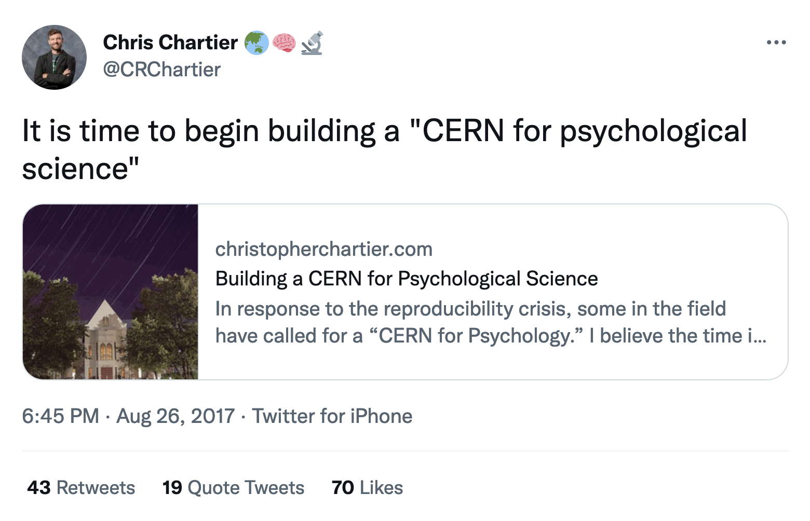
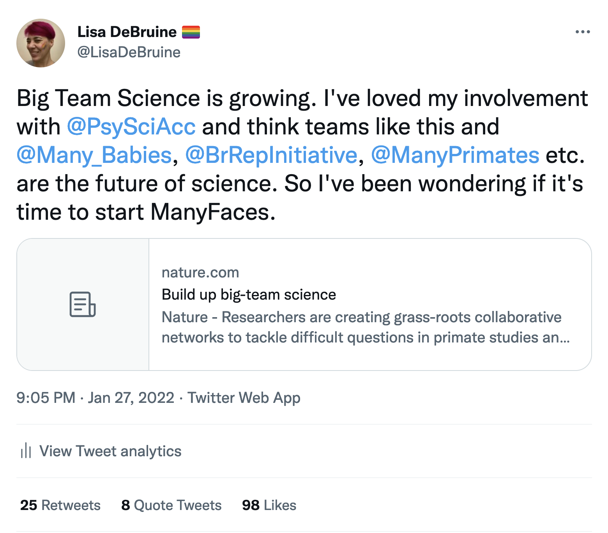
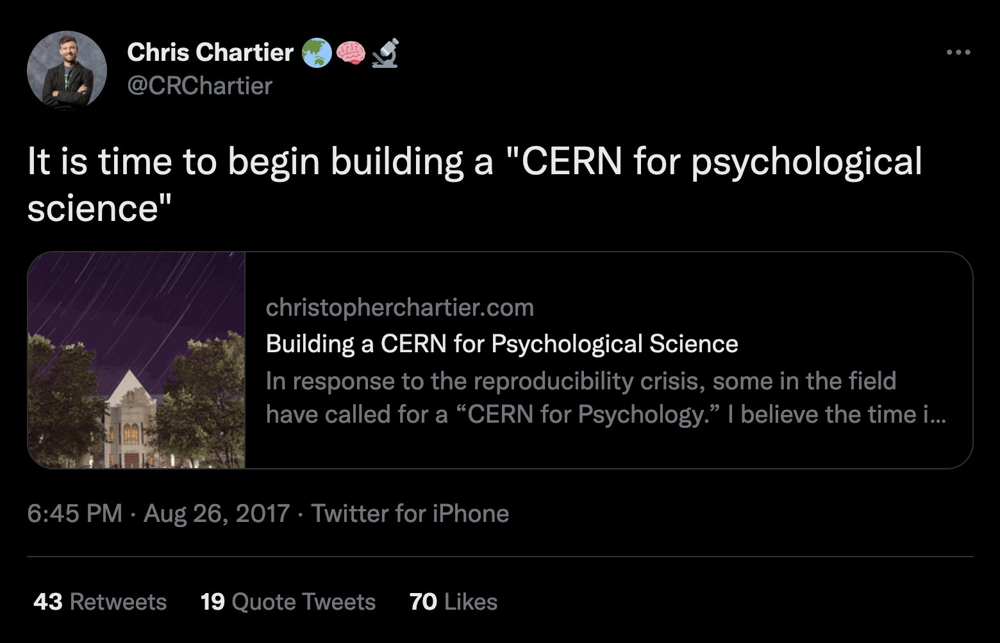
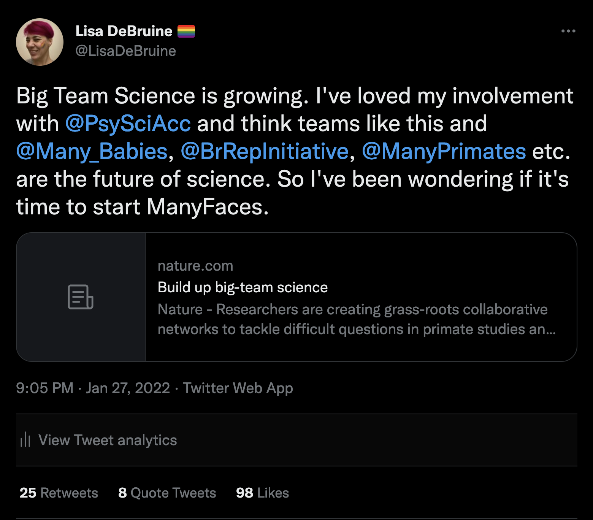
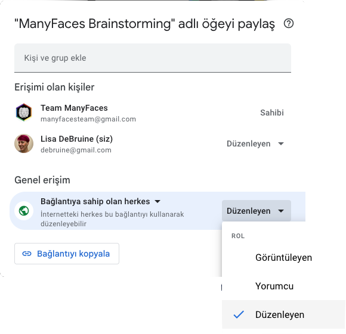

11 Üye Alımı
Benim Psychological Science Accelerator’a dahil olmam 2017’de Chris Chartier’ın bir tweet’i ile başladı. Ve 5 yıl sonra, ManyFaces bir diğeri ile başladı.




Twitter veya diğer sosyal medya platformları büyük ekip bilimi grupları başlatma isteğini ölçmek için çok iyi bir yoldur. Eğer çok ilgi olursa bu ivmeyi korumak için hızlı bir şekilde organize olmaya hazır olmanız gerekir.
11.1 İlgilenenleri kaydetme
Grupla ilgilenenleri kaydetmek için hızlıca Google form üzerinden bir anket oluşturabilirsiniz. Böylece, eğer hemen başlayacak zamanınız yoksa sonradan iletişime geçmek için, ilgilenen herkesin yer aldığı bir liste oluşturabilirsiniz. Ayrıca, kimlerin Twitter ileti dizileriyle, e-postalarla, Facebook gönderiyle ilgilendiğini takip etmeden üye katılımını merkezileştirmenin de bir yoludur.
Katılım formunu kısa ve kolay olacak şekilde hazırlayın:
- İsim
- E-posta
- Lokasyon/Kurum
- Yorumlar için serbest metin alanı
Ayrıca, biraz özel sorular da sorabilirsiniz. Örneğin, ManyFaces’in formunda aşağıdakiler soruldu:
Hangisi üzerinden tartışmayı tercih edersiniz:
- Canlı konuşma (örn. Zoom)
- Asenkron mesajlaşma (örn. slack/Teams/ortak bir Google Dokümanlar belgesi)
Bir konsorsiyum ile ne oluşturmak istersiniz?
- Uyaran veri tabanı
- Yeni uyaran koleksiyonları
- Yeni uyaranlar veya çalışma protokolleri
- Veri toplamada iş birliği
- Diğer…
11.2 Beyin Fırtınası Belgesi
ManyFaces ve Code Check Club için gerçekten işe yarayan şeylerden biri beyin fırtınası belgeleri oluşturmak oldu. Bu, fikirleri toplamak ve organize etmek için Twitter veya forum paylaşımlarından daha iyi bir yoldur.
Google Dokümanlar bir beyin fırtınası belgesi oluşturmak için ideal bir araçtır. Sadece bir belge oluşturun ve belgenin bağlantısına sahip olan herkesin düzenleme yapabileceği (ya da en azından yorum yapabileceği) şekilde paylaşım ayarlarını güncelleyin.

11.2.1 Yapı
Ben beyin fırtınası belgesini aşağıdaki gibi başlıklar ile yapılandırırdım (aslında kullanışlı bir ana hat elde etmek için başlık stillerini kullanabilirsiniz):
- Amaç: belgenin amacını ve nasıl kullanılacağını açıklayın
- Duyurular: duyurular yapmak ve görevler eklemek için en üstte bir boşluk ayırın
- Temel Değerler: bu grubu bir araya getiren değerler nelerdir?
- Katkı Sağlayanlar: kendinizi tanıtın, sizi bu gruba neyin getirdiğini ve bu gruptan ne elde etmeyi umduğunu yazın
- Kaynaklar: potansiyel grup üyeleri zaman, uzmanlık, ekipman veya materyal açısından ne gibi katkılar sağlamak zorundalar?
- Sorular/Hedefler: bu grubun ele alacağı sorular veya grubun kapsayıcı hedefleri nelerdir?
- Fikirler: grubun ne yapabileceği konusunda tüm fikirlerinizi listeleyin; hiçbir fikir bu aşamada çok büyük/küçük değildir
- Zorluklar: insanlar bu grubu kurmak ve sürdürmek için ne gibi engeller görüyor?
- Organize Etme: bu grubu başlatmak için nelerin yapılmasının gerektiğini listeleyin (bu kılavuzun geri kalanı bu konuda yardımcı olacaktır)
11.2.2 Temel Değerler
Temel değerlerin bir listesi, gruba katılan kişilerin aynı amaç ve değerlere sahip olmasını sağlamaya yardımcı olabilir. Aşağıdaki örnekleri kullanarak işe başlayabilir ve gruptan bu listeyi ayrıntılandırmasını isteyebilirsiniz.
ManyFaces Temel Değerleri
- Etik
- Kişisel verilerin korunumu
- Yapay zekanın/yüz tanımanın uygunsuz kullanımından kaçınmak ve uygunsuz kullanımına karşı çıkmak
- Çeşitlilik ve Kapsama
- Bölge, kariyer aşaması, bilim dalı, metodoloji, toplumsal cinsiyet, milliyet vd. konularda çeşitlilik
- “Zenginleri daha da zenginleştirmeyin”
- Daha fazla kaynağa sahip laboratuvarlar, daha az kaynağa sahip laboratuvarlara ve bireysel araştırmacılara yardım etme sorumluluğuna sahiptir.
- Şeffaflık
- Kaynakların ve elde edilen sonuçların etiğin izin verdiği ölçüde açık bir şekilde paylaşılması
- Her üye her karara dahil olamasa da karar verme süreci herkese açık olmalıdır.
ManyBabies Prensipleri
- Şeffaflık: Bir MB projesinde tasarımdan yayına kadar tüm kararlar mümkün olduğunda şeffaftır.
- İş birliği içinde yönetim: Mümkün ve uygulanabilir olduğu sürece kararlar ortak ve şeffaf bir şekilde alınır.
- Kapsayıcılık ve çeşitlilik: MB, çeşitliliği artırma çabalarını açıkça desteklemektedir. Bu, yeterince temsil edilmeyen topluklardaki laboratuvarların katılımına yardımcı olmak için ödenek bulma başvurularını, sosyal çardım çabalarını ve atölyeler planlamayı içerir.
- Etik araştırma: MB projeleri en iyi uygulamalara ve yüksek etik standartlara bağlıdır.
- Saygı: Herkes, saygı içerisindeki etkileşimleri garanti altına alan genel davranış kurallarını kabul eder.
PSA Temel Prensipleri
- Çeşitlilik ve kapsama
- Merkezi olmayan otorite
- Şeffaflık
- Dikkat/titizlik
- Eleştiriye açıklık
Daha fazla detay için PSA web sitesini inceleyin.
11.3 Organizasyonu Başlatmak
Eğer kayıtlar ve yapılan katkılar pek etkileyici değilse endişelenmeyin. Bu grubu başlatmak için doğru zaman olmayabilir. Büyük ekip bilimi grubu organize etmek tek bir kişi için çok fazla iş yükü olabilir. Bu sebeple hevesli üyelerin ve kendini bu işe adamış temel bir grubun varlığından emin olun.
Eğer çok fazla kişi bir grup başlatmak için kaydolursa birçoğu beyin fırtınası belgesine katkıda bulunacaktır. Böylece, yardım etmek için zamanı, hevesi ve fikirleri olan temel kişiler hazırdır. İşte şimdi organize etmeye başlamanın zamanı! Bir sonraki adımınız yönetim sistemini hazırlamaktır.